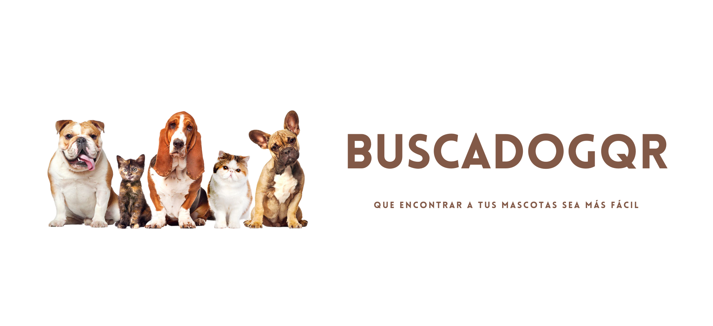
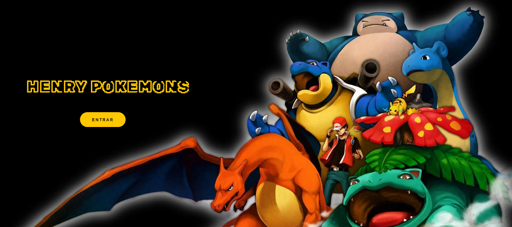
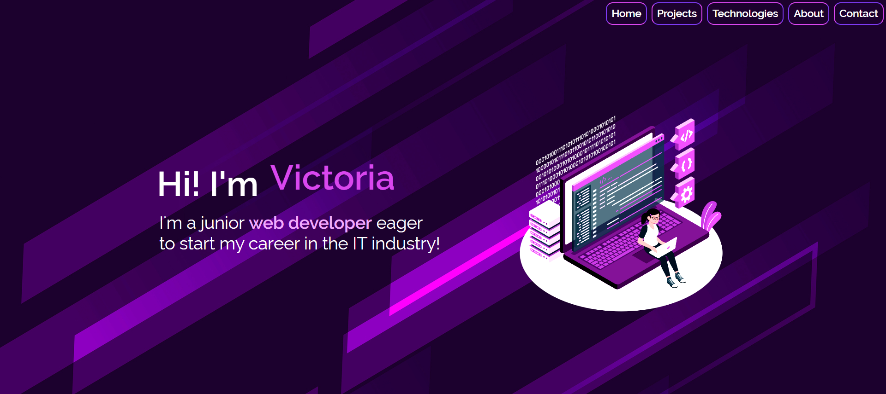

Proyectos
Dentro de los proyectos que realicé a modo educativo, destaco los siguientes:
BuscadogQR
Página web que ayuda, con chapitas engravadas con un código QR, a la búsqueda de mascotas perdidas. Fue desarrollada utilizando JavaScript, HTML, CSS, Tailwind CSS, React.js y Firebase.
Henry Pokemons
Proyecto individual del bootcamp Henry. Es una página web que permite visualizar, ordenar, filtrar y buscar pokemones, ademas de poder crear uno a través de un formulario. Fue desarrollada utilizando JavaScript, HTML, CSS, React.js y Redux.
Royal Makeup
Proyecto final y grupal del bootcamp Henry. Es un E-Commerce de maquillaje. Contiene una página principal, un catálogo de productos, perfiles de usuario, un carrito y órdenes de compra, pagos con PayPal, servicio de mailing y un panel de administrador. Fue desarrollada utilizando JavaScript, HTML, CSS, Tailwind CSS, React.js, Material UI, Redux, Sequelize, Express.js, Node.js, PostgreSQL, Nodemailer y Firebase Authentication.
Portfolio
Portafolio personal desarrollado con JavaScript, HTML, CSS, Tailwind CSS y React.js.